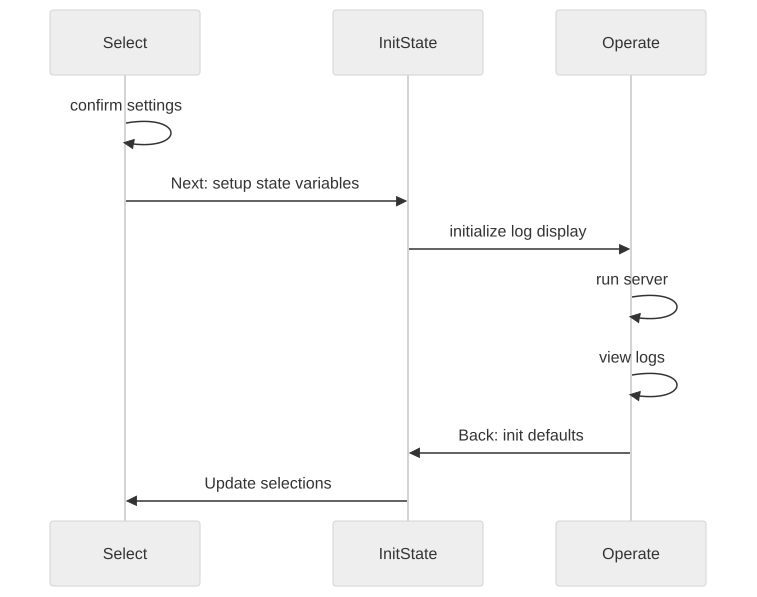

1.0 TUI Design Elements {#SDD_001}
The daemontui script provides a convenient way to run any of the
existing daemon scripts with default (but adjustable) values. The TUI
interface can support both keyboard and mouse input (as long as the
underlying console also supports mouse input) for both option selection
and navigation. The Debug option will increase verbosity both in the
daemon log output and the TUI parameters (on exit).
Network functional elements
server listens (IPv4 address and port, pyserv)
server status checks daemon PID
UI sets server params (defaults plus user overrides)
UI elements
edit and validate settings
control server state
view recent log output
SW diagrams
Rendered versions of current mermaid_ diagrams are shown here, starting with the following activity sequence diagram for the TUI context loops.
{kind=link}

Activity Sequence Diagram.
tui_sequence_diagram source
User activity sequence diagram showing 2 primary Screen contexts.sequenceDiagram
participant Select
participant InitState
participant Operate
Select->>Select: confirm settings
Select->>InitState: Next: setup state variables
InitState->>Operate: initialize log display
Operate->>Operate: run server
Operate->>Operate: view logs
Operate->>InitState: Back: init defaults
InitState->>Select: Update selections
SW dependencies
{kind=link}

Primary Software Dependencies.
tui_dependency_graph source
daemontui dependency graph showing primary software units.graph TB
subgraph id1[Static Dependencies]
subgraph id2[Packages]
A(daemontui)
B(picotui)
C(pygtail)
D(pyserv)
end
A --> B & C & D
end
1.1 SDD_002 {#SDD_002}
daemontui settings
The daemontui software must know the appropriate default settings, as well as both allow changes at runtime, and match the pre-configured values used by the daemon scripts.
Individual settings values are mostly specific to a server implementation, eg, log file names and socket timeouts.
The software should provide appropriate data structures to handle both groups of settings and dynamic data such as network device names and file system paths, starting with user-confirmed runtime settings for server and logging options.
scripts/daemontui.py(line 122)
Parent links: TUI_002, TUI_003
1.2 SDD_003 {#SDD_003}
daemontui indicators
The daemontui software must display network and server status to the operator using both visual indicators and log entries.
scripts/daemontui.py(line 212)scripts/daemontui.py(line 217)
Parent links: TUI_001, TUI_005
1.3 SDD_004 {#SDD_004}
daemontui controls
The daemontui software must provide obvious operator controls that correspond to the primary daemon commands: [start, stop, status]
scripts/daemontui.py(line 235)scripts/daemontui.py(line 238)scripts/daemontui.py(line 241)
Parent links: TUI_004